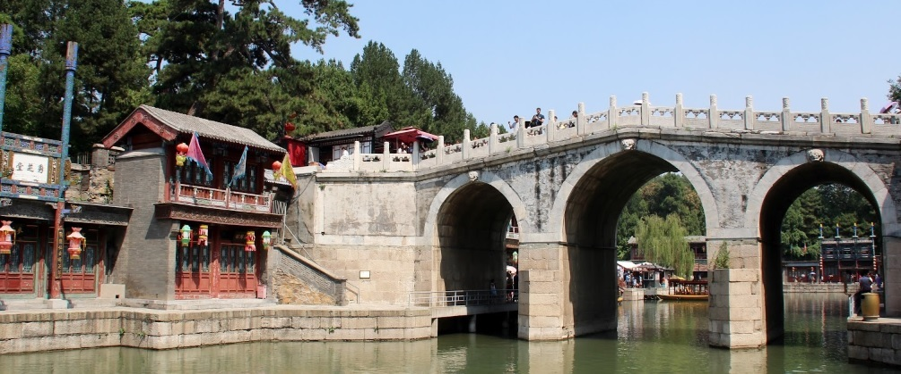
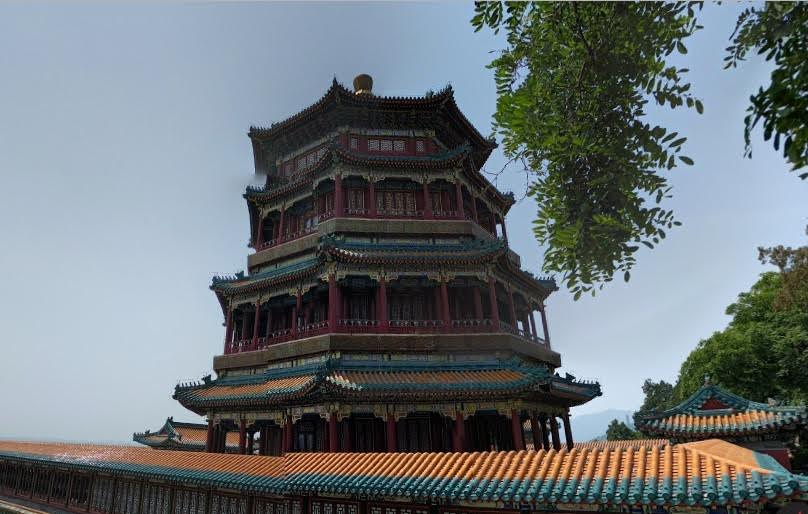
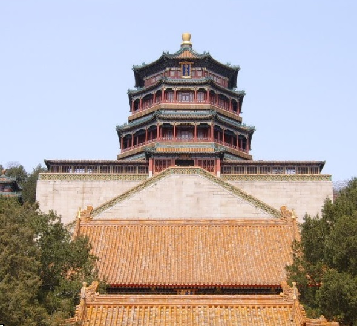
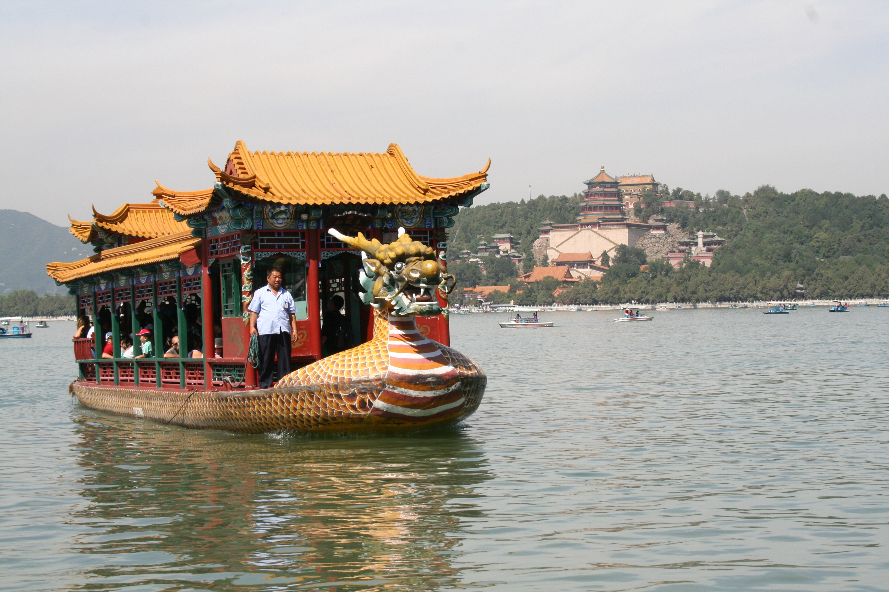
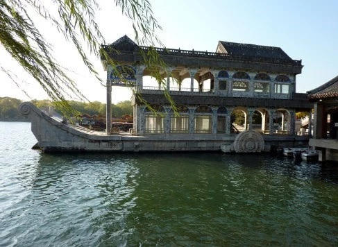
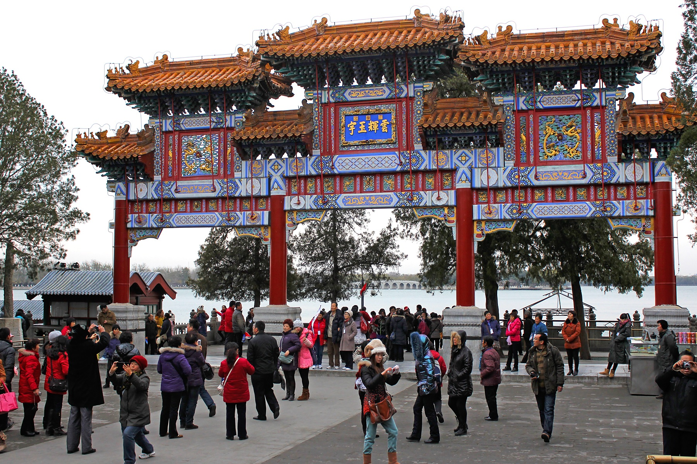

Het Zomerpaleis is een van de meest indrukwekkende paleizen in heel China. Gelegen op de Heuvel van het Lange Leven aan een kunstmatig aangelegd meer bestaat het uit vele paleizen, tempels, paviljoenen, bruggen, pagodes en letterlijk honderden wandelpaden in uitgestrekte tuinen. Eeuwenlang werd het door de Chinese keizer en zijn entourage gebruikt als buitenpaleis, wanneer het tijdens de zomer weer eens te heet werd in de binnenstad. Het Zomerpaleis kent de grootste en best bewaard gebleven Chinese tuin in deze stijl en het staat sinds 1998 op de UNESCO Werelderfgoedlijst.
Geschiedenis
Hoewel tijdens de Jin-dynastie (1115-1234) op de locatie van het huidige
Zomerpaleis reeds een paleis en enkele tempels gebouwd werden, was het tijdens
de latere Qing-dynastie (1644-1912) dat het Zomerpaleis, zoals het vandaag de
dag te bezichtigen is, vorm kreeg. De moeder van de toenmalige Chinese keizer
Qianlong zou namelijk zestig jaar worden, dus vond de keizer het een goed idee
een heuvel van zestig meter hoog aan te laten leggen en er allerlei paleizen
en tempels op te laten bouwen. De aanleg van deze "Heuvel van het Lange
Leven" werd begonnen in 1750. Het zand werd gewonnen uit een nabij gelegen
stuwmeer dat verder uitgebreid werd, waardoor het Kunmingmeer vorm kreeg.
De daaropvolgende vijftien jaren werden de paviljoenen, paleizen en torens
toegevoegd, en werden ook de zo typerende keizerlijke tuinen aangelegd.
Door de aangename omgeving en het feit dat het aan het meer in de hete
zomermaanden veel beter te verdragen was dan in de Verboden Stad in het
centrum van Beijing, groeide het Zomerpaleis uit tot een van de belangrijke
centra van waaruit het Chinese keizerrijk geregeerd werd. Ook de Westerse
mogendheden wisten dit, en toen China in de tweede helft van de negentiende
eeuw bijna maar net niet gekoloniseerd werd, is het Zomerpaleis dan ook
tweemaal grondig vernield. De eerste keer was tijdens de Tweede Opiumoorlog in
1860, waarin China werd gedwongen zich open te stellen voor meer handel met het
Westen. De tweede keer was tijdens de Bokseropstand waarin Chinezen tevergeefs
buitenlandse mogendheden het land uit wilden drijven.
Een berucht verhaal verbonden met het Zomerpaleis is dat van regentes Cixi,
die de feitelijke macht had in China tijdens de tweede helft van de negentiende
eeuw. In zowel de Westerse als Chinese overleving wordt ze als een kreng
beschouwd, dat liever in haar paleis, het Zomerpaleis dus, zat dan dat ze om het
bestuur van het land gaf. Nadat het Zomerpaleis voor de eerste keer vernield was,
liet Cixi belastingen innen om hiermee een vloot te bouwen om de Westerse
machten weerstand te bieden. In plaats van voor een Chinese vloot werd het geld
echter gebruikt om het Zomerpaleis op te knappen. Een grote, statige marmeren
boot die niet kon varen en nooit in staat zou zijn de Westerse vloten in de as
te leggen is een van haar toevoegingen.
Nadat het Chinese keizerrijk in 1911 tenonder ging, werd het Zomerpaleis nogmaals
slachtoffer van militaire aanvallen, ditmaal tussen de communistische en
de nationalistische Chinezen. De communisten wonnen, herstelden het paleis
opnieuw en in de tweede helft van de twintigste eeuw groeide het uit tot een
van de belangrijkste toeristische attracties in heel China.
Gebouwen

A Suzhoustraat - Chinees: 苏州街
Suzhoustraat, aan de achterkant van de Heuvel van het Lange Leven en het eerste
dat je ziet als het park via de noordelijke ingang binnenkomt, is een pittoresk
kanaal met bootjes en typisch Chinese winkeltjes erlangs zoals deze ook in de
stad Suzhou in het zuiden van China te vinden zijn. Keizer Qianlong was namelijk
erg onder de indruk van de schoonheid van Suzhou en liet een deel van die stad
daarom maar in zijn paleis nabouwen. Wanneer hij met de keizerin of zijn concubines
op bezoek kwam, verkleedden de keizerlijke eunuchs en dienstmeisjes zich als
marktkooplui en bezoekers, zodat het voor de keizer net leek alsof hij echt in
Suzhou was. Tegenwoordig zijn in de winkeltjes langs het kanaal souveniers te
koop.

B Hal van de Zee der Wijsheid - Chinees: 智慧海
Helemaal bovenop de Heuvel van het Lange Leven staat de boeddhistische Hal van
de Zee der Wijsheid. Het bijzondere aan dit gebouw is dat er geen houten balken
zijn gebruikt in de constructie, het bestaat volledig uit ingemetselde geglazuurde
tegels in allerlei warme kleuren. Binnenin is het mogelijk te bidden voor een
standbeeld van de boeddhistische godin Guanyin, de godin van de troost en genade.
Hoewel het gebouw zelf de meermaals vernielingen van het Zomerpaleis overleefde,
zijn wel in meer dan duizend kleinere boeddhistische beelden verloren gegaan.

C Toren van de Boeddhistische Wierook - Chinees: 佛香阁
Het hoogste en meest in het oog springende gebouw van het Zomerpaleis is de
41 meter hoge Toren van de Boeddhistische Wierook, gebouwd op een 21 meter
hoge sokkel net onder de top van de Heuvel van het Lange Leven. Aanvankelijk
wilde keizer Qianlong hier een pagoda gebouwd hebben, maar toen deze bijna af
was bedacht hij zich, liet de pagoda omgooien en werd deze toren ervoor in de
plaats gezet. De toren zelf werd overigens in de Tweede Opiumoorlog ook nog
eens door de Engelsen omgegooid, maar vervolgens door de Chinezen weer
gereconstrueerd. Tijdens hun verblijf in het Zomerpaleis kwamen de Chinese
keizers tweemaal in de maand in deze toren om te bidden.

D Hal van de Wegdrijvende Wolken - Chinees: 排云殿
De Chinese keizers hadden voor alles een oplossing, zo ook voor teveel bewolking.
Net als de hele heuvel waarop het Zomerpaleis gebouwd is, liet keizer Qianlong
ook deze Hal van de Wegdrijvende Wolken bouwen ter ere van de zestigste verjaardag
van zijn moeder. Zijn moeder hield namelijk erg van zonnige dagen. De gebouwen
staan op de plaats waar voor de aanleg van het Zomerpaleis reeds eeuwenlang een
tempel had gestaan. Aan de noordelijke kant grenst het aan de sokkel van de Toren
van de Boeddhistische Wierrook. Aan de zuidelijke kant, waar de toegangspoort de
hieronder beschreven Lange Gallerij onderbreekt, zijn ook standbeelden van de
twaalf dieren van de Chinese zodiac te vinden.

E Lange Galerij - Chinees: 长廊
De Lange Galerij is wat de naam doet vermoeden en is rond 1750 door keizer
Qianlong laten bouwen aan de voet van de Heuvel van het Lange Leven, langs de
oever van het Kunmingmeer. Met meer dan 700 meter lang is het de langste galerij
ter wereld. Er zijn 273 open kamers met in totaal duizenden verschillende
schilderijen van de zuidelijke Chinese stad Hangzhou en omgeving, van
gebeurtenissen in de Chinese geschiedenis en van de Chinese flora en fauna. Als
het niet al te druk in het Zomerpaleis is dit een aangename omgeving om even te
zitten uitrusten en van de omgeving te genieten.

F Paviljoen van de Edele Wolken - Chinees: 宝云阁
Een veel over het hoofd geziene bezienswaardigheid is het Paviljoen van de
Edele Wolken, aan de rechterkant (vanaf het meer gezien) van de Hal van de
Wegdrijvende Wolken. Het is een 7,5 meter hoog paviljoen dat volledig van
brons is, waardoor telkens wanneer buitenlandse of Chinese troepen weer eens
het zomerpaleis binnen kwamen om alles in de brand te steken dit gebouw
gespaard bleef. Toen de Chinese regering en Tibet nog op betere voet met
elkaar stonden, reisden boeddhistische monniken uit Tibet naar Beijing om in
dit paviljoen te bidden.

G Kunmingmeer - Chinees: 昆明湖
Het Kunmingmeer was oorspronkelijk een klein stuwmeer waar enkele beken in
uitmondden. Toen keizer Qianlong opdracht gaf het hele complex te laten
bouwen, liet hij dit reservoir uitbreiden tot het huidige meer dat door vele
dijken en bruggen is onderverdeeld in drie kleinere meren met elk een klein
eiland erin. De tempels op Nanhu-eiland, bereikbaar via de Brug van de
Zeventien Bogen, stonden er overigens al voor de uitbreiding van het meer.
Aangezien de keizer ze wilde behouden is het meer rond de tempels uitgegraven,
waardoor het eiland dus ontstaan is. Tegenwoordig wordt het Kunmingmeer veel
gebruikt door toeristen om in bootjes op rond te dobberen.

H Marmeren Boot - Chinees: 清晏舫
De Marmeren Boot is eerder een bouwwerk dan een echte boot en is duidelijk
zichtbaar aan het einde van de promenade langs de over van het Kunmingmeer.
Veel Chinese tuinen kennen soortgelijke boten die enkel bedoeld zijn zitplaats
om thee of wat sterke drank te drinken. Oorspronkelijk kende het Zomerpaleis
een marmeren boot in Chinese stijl, maar nadat deze door oorlogen in de
negentiende zwaar beschadigd werd liet regentes Cixi een nieuwe bouwen in
Westerse stijl, de boot die er nu nog staat. Hierop kreeg ze overigens veel
kritiek, omdat de boot, net als de rest van de restauratie van het Zomerpaleis,
betaald werd uit de kas voor de modernisering van de Chinese marine.
Begrijpelijkerwijs konden de Chinese mariniers met deze Marmeren Boot niet
veel aanrichten.

I Oostelijke paleispoort - Chinees: 东宫门
De hoofdingang van het Zomerpaleis, de oostelijke poort, heeft drie grote
deuren: één voor de familie van de keizer, één voor de bureaucraten, en
natuurlijk één voor de keizer en keizerin. Boven de poort staat op een groot
bord 颐和园, wat sinds 1888 de Chinese naam is voor het Zomerpaleis en
letterlijk staat voor Tuinen van de Koesterende Vrede. Rondom de oostelijke
poort staan alle vertrekken die tijdens het verblijf van de keizers gebruikt
werden voor het administratieve beheer van het rijk en voor het ontvangen
van belangrijke gasten. De meeste mensen die het Zomerpaleis met een tour
bezoeken zullen per bus bij deze poort aankomen.

J Hal van de Welwillendheid en het Lange Leven - Chinees: 乐寿堂
Meteen na de oostelijke poort staan de administratieve vertrekken van waaruit
China bestuurd werd tijdens de hete zomermaanden. De Hal van de Welwillendheid
en het Lange Leven, de keizerlijke troonzaal waar de belangrijkste gasten
ontvangen werden, staat hier centraal. De naam komt van een Confuciaans
gezegde dat die heerser die welwillend is een lang leven zal leiden. Op de
binnenplaats zijn een bronzen beeld van een Kylin, een mythisch dier met een
drakenhoofd, een hertengewei en een leeuwenstaart, als wel als beelden van
feniksen en draken te vinden.